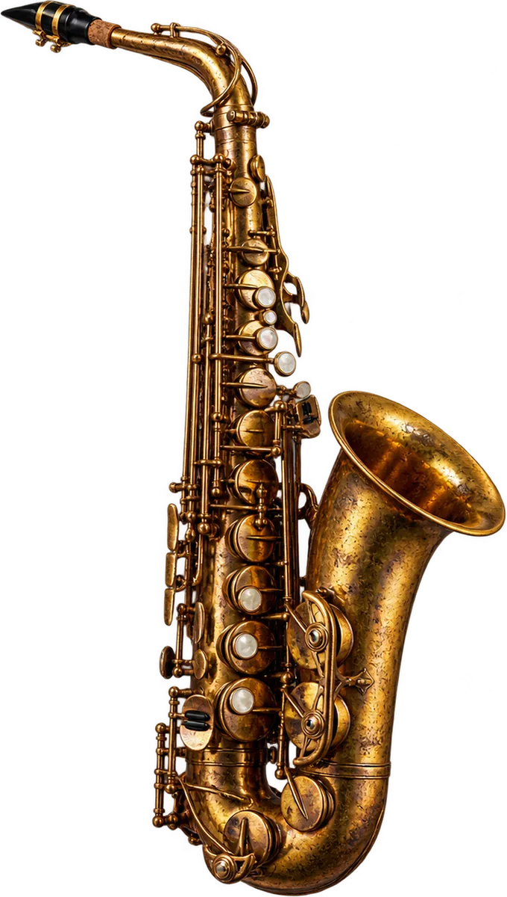
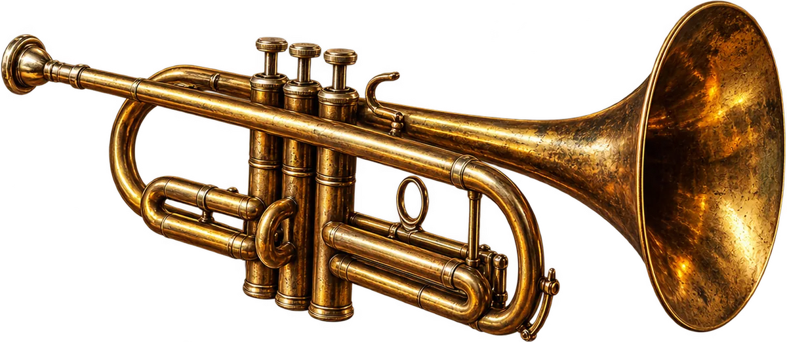
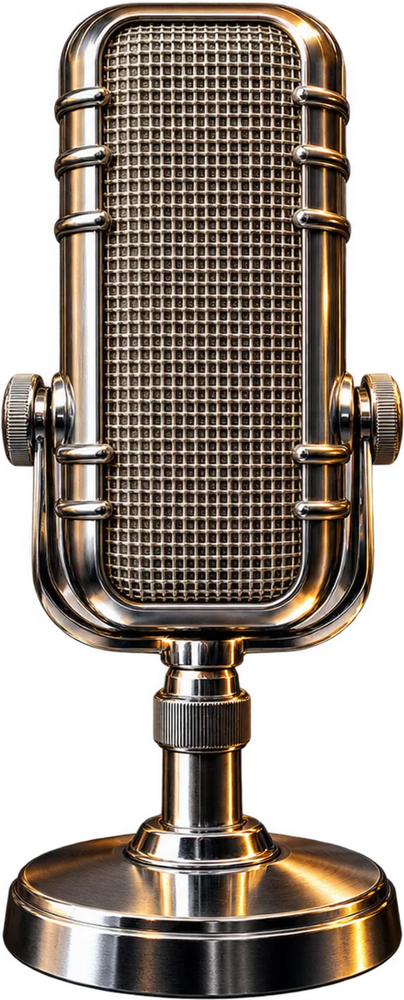

Radio JAZZ
89.1 FM · Москва · все джазовые направления
JAZZ89.1 FM
← покрути пластинку →
Сейчас в эфире · Jazz Legends
Dizzy Gillespie
A Night in Tunisia
00:00
Live
Демо: эфир не транслируется
Недавно звучало
Журнал
Новости
Биография
Диззи Гиллеспи — джазмен, от музыки которого голова идёт кругом
01
НовостиРадио JAZZ презентовало собственный аромат
02 НовостиСергею Жилину — 60!
03 Цитаты10 советов Телониуса Монка музыкантам
04 ПодборкаЛучшие джаз-фьюжн альбомы
05 БиографияРэй Чарльз: трагедия жизни, обернувшаяся чудом
06 ИсторияЭлла Фицджеральд и Мэрилин Монро
07 ПодборкаЛучшие джазовые саксофонисты XX — начала XXI века
08 РелизыАлексей Круглов представил новый взгляд на «A Love Supreme» Колтрейна
09Слушать в записи
Подкасты

Прямой эфир
Напиши ведущему
Привет, заявка, вопрос гостю студии — сообщение попадёт прямо в эфирную студию.

Музыкантам
Пришли свой трек
Играешь джаз? Отправь запись редакции — лучшие треки звучат в эфире 89.1 FM.
Отправить трек